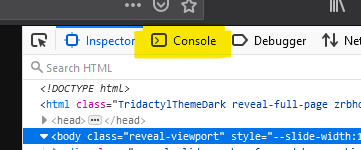

Hey! 👋🏼
Javascript: Recap + DOM Manipulation
Redi School Munich - Spring 2021
Recap
Recap

Recap
- ✅ Event listeners
- ✅ Developer tools
- ✅ Conditionals
- ✅ Loops
- ✅ DOM Manipulation 👀
Recap: Developer Tools
Keyboard shortcut: F12
Developer Console
Language Basics:
Variables
Variables
MDN: Declarations- ✅ why
- ✅ let
- ✅ const
- ✅ primitive data types
- ✅ typeof
- ✅ naming convention (must be self explanatory)
- ✅ Object (also arrays) & Functions (incl. BigInt and Symbol)
Logging
MDN: console.log()console.log() can be used to print any value into
the developer console.
- ✅ why
- ✅ importance
- ✅ console.(log|info|error)

Language Basics:
Language Basics:
- ✅ comments
- ✅ operators
- ✅ type conversion (implicit vs explicit)
Language Structure:
Language Structure:
(demo included)
- ✅ conditionals
- ✅ functions
- ✅ arrow functions (short-hand)
- ✅ DOM, finally!
- ✅ Loops, loops and more loops!
- ✅ Arrays and Objects
Document Object Model
Javascript's interface for interacting with HTML
MDN: Document Object ModelQuery Selector
MDN: Document.querySelector()Select an HTML element using CSS-selectors in Javascript
query-selectors.html
<!DOCTYPE html>
<html>
<head>
<title>Query Seletctors</title>
<script src="query-selectors.js" defer>
</script>
</head>
<body>
<h1>Query Selectors</h1>
</body>
</html>
query-selectors.js
let heading = document.querySelector("h1");
heading.innerText = "Changed";
console.log(heading);
Element.innerText
lets us access and change the element's content.
Putting all of it together
<script>
function changeImage() {
const imgElement = document.querySelector("#catImage");
if (imgElement.attributes.src.value === "images/cat1.jpg") {
imgElement.attributes.src.value = "images/cat2.jpg";
} else if (imgElement.attributes.src.value === "images/cat2.jpg") {
imgElement.attributes.src.value = "images/cat3.jpg";
} else {
imgElement.attributes.src.value = "images/cat1.jpg";
}
}
</script>
<!-- ... -->
<button type="button" onClick="changeImage()">Change Image</button>
<img src="images/cat1.jpg" id="catImage" alt="Cat"/>
Language Basics:
Loops
Loops
Two commonly used types:
whilefor
while
MDN: while
Syntax:
while ( /* condition */ ) {
/* code to run repeatedly while condition is true */
}
The syntax of while-loops is similar to that of
if-statements:
if ( /* condition */ ) {
/* code to run if condition is true */
}
while
sum += number;is equivalent to
sum = sum + number;number++;is equivalent to
number = number + 1;The break keyword
Stops the execution of a loop regardless of the condition
for
MDN: for
Syntax:
for ( /* initialization */; /* condition */; /* final expression */) {
/* code to be run while condition is true */
}
for
Every for loop can be rewritten as a
while loop
Language Basics:
Arrays
Arrays
MDN: Array
- Variable type that holds multiple values
- Useful when handling a larger, possibly even unknown amount of similar objects
Objects
MDN: Object
- Variable type that holds a collection of data
- Useful when handling a larger, possibly even unknown amount of similar objects
Array initialization
Empty array
let myArray = [];
Non-empty array
let myArray = ["first value", "second value", "third value"];
Arrays aren't primitive types, therefore the
typeof operator returns "object".
To check whether a variable is an array, use
Array.isArray().
let myArray = [1, 2, 3];
console.log(typeof myArray); // ==> "object"
console.log(Array.isArray(myArray)); // ==> true
Accessing array elements
let zooAnimals = ["giraffe", "zebra", "lion"];
// Array indexes start at 0
console.log(myArray[0]); // ==> "giraffe"
console.log(myArray[1]); // ==> "zebra"
console.log(myArray[2]); // ==> "lion"
myArray[0] = "tortoise";
console.log(myArray[0]); // ==> "tortoise"
Adding and removing elements
let cakeIngredients = ["eggs", "flour", "sugar"];
cakeIngredients.push("chocolate");
console.log(cakeIngredients); // ==> ["eggs", "flour", "sugar", "chocolate"]
let ingredient = cakeIngredients.pop();
console.log(ingredient); // ==> "chocolate";
console.log(cakeIngredients); // ==> ["eggs", "flour", "sugar"];
Iterating through arrays
Output in both cases:
A practical example
arrays.html
<!DOCTYPE html>
<html lang="en">
<head>
<title>Arrays</title>
<script src="arrays.js" defer></script>
</head>
<body>
<a href="#">Regular link</a>
<a href="https://google.com">External link</a>
<a href="otherpage.html">Regular link</a>
<a href="https://bing.com">External link</a>
</body>
</html>
arrays.js
const externalAnchors =
document.querySelectorAll('a[href^="https://"]');
for (let anchor of externalAnchors) {
anchor.target = "_blank";
}
Object initialization
Empty object
let myObject = {};
Non-empty array
let myObject = {
name: 'Zac',
age: 33,
likesCoding: true
};
Objects aren't also primitive types, therefore the
typeof operator returns "object". >.
let myObject = {
name: 'Joao',
age: 92,
likesCoding: true
};
console.log(myObject.name); // ==> "Joao"
console.log(typeof myObject === 'object'); // ==> true
Finally, demos! (one-way data binding)
MDN: Manipulating documents (DOM)
incl. DOM manipulations on a Twitter-like example 🙂
In-class exercise!
45 minutes! 🕘
- Display 10 movie titles according to an array of nominees from before-ystday' Oscar! (payload will be given)
- If item is more than 5 stars, a highlight should be shown (maybe a background or a star should appear – up to you!)
- Use functions, conditionals and loops and whatever you feel like you have learned over the past classes
✨ Make usage of the following (if there's time enough):
- - Make usage of grid / flexbox (if possible)
Homework!
Let's evolve the twitter application we created together. (I'll send you it soon!)
Questions || Feedback?